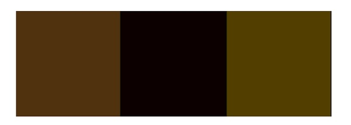

iTunes的cover背景字体配色的故事

iTunes11的字体配色到底是怎么算出来的呢？
从前，有一位名叫Nobuyuki Otsu的同学提出了Otsu Method， 可以对灰度图像进行thresholding。原理是找到一个或多个threshold来maximize inter-class variance。
我想，如果把图片的灰度直方图换成颜色直方图，是不是就能找到两个threshold，并得出三个class mean来作为三种代表颜色呢？
实际编程的时候发现，颜色直方图的维度远大于灰度直方图，查找threshold变得很慢。。。如果直接使用颜色直方图的三个maximum，用上图取得的三种颜色如下，显然没有iTunes里面算法的效果好。。。

然后我最后发现了这个，原来这个问题的答案早就不再是一个秘密>_<：
重点：1. iTunes计算的dominant color是根据封面图片外围的一圈的像素。
2. Euclidean distance 用来测量两个颜色的距离。为了符合人的感官，RGB要转换为YUV。
3. 大体方法就是找直方图的maximum并且排除距离太近的maximum。跟我下午说的一条豆瓣说类似。。。
4. 我发现iTunes11有时候会使用cover图片没有的颜色。（例如图片由两种颜色组成）。估计是增加了其他的判断条件，然后加入黑色或白色。